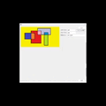
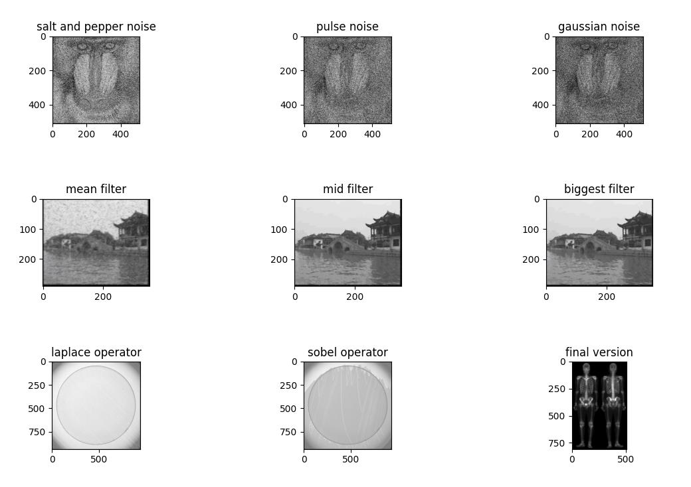

I am a third year undergraduate student at Sichuan University, majoring in Measure Control Technology and Instruments. My research interest includes robotics, computer graphics (simulation) and brain-machine interface.
I'm a fanatic of robotics. Most of my research is about robotics (Structures, Simulation, Vision, Control, Reinforcement learning, Circuits, etc). Representative projects are highlighted.
Participated in image recognition and object detection based on RealSense and YOLO, as well as lidar and IMU fusion mapping tasks and designed leg mechanical structures, circuits and simulated gaits for two quadruped robots with 8 and 12 DOF.
We utilized 3D printing technology to create the mold for the soft robotic gripper, integrated custom-made flexible pressure and temperature sensors and used STM32 for closed-loop control and data collection through the I2C bus protocol.


Photoshop-like application without OpenCV with C++ and Python Guangxuan Xu Medical Image Processing Project, 2023
code / blog
I utilized pointers to open .bmp files of varying bit depths and used NumPy exclusively to apply space and frequency filtering, conduct image encoding and decoding, and perform object detection.
{kind=link}